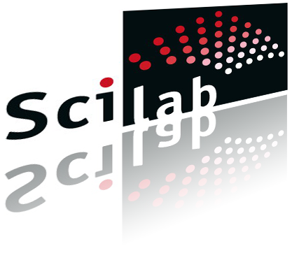

.
Scilab On-line Help

W3 Scilab
- on Web
National Resource Center for Free/Open Source Software, India
Select an example code:
Select an example code
Mesh
Grid
Milk Drop
plot3d1
contour2d
subplot
fgrayplot
3D Surface
fplot3d
fchamp
Evans root locus
Polar Plot
Hist3d
Matplot
Bar
Nichols chart
Bode Plot
2D Vector field Plot
Colorbar
Level curves on a 3D surface
Pseudo-color plot of a triangular mesh
Gain plot
Shell
Hole3d
Torus
Moebius
Plot2d1
Histplot
Param3d
Drawing surfaces defined by facets
Response of Chebyshev type 1 filter
Detrend
Bessel function
One dimension Interpolation
Square wave with period 2*%pi
Colorbar 2
Contour2di
Bezier Surface Test
Mesh of amdba type
2D curve Bezier test
Gammatest
3D Surface defined by a function
Finite Element Display 1
Complex exp function on D(0,R=2)
Complex log function on D(0,R=4)
Complex atanh function on [-2,2] x [-2,2]
Simulation of Poison Random variable
Simulation of Weibull Random variable
2D plots superposition
2D plot with implicit abscissae values
errbar
Using fec to smooth a grayplot
Sphere
Spiral
Tube
Black Hole
Riemann surface (n=2)
Surf
Mesh of rectangular facets
Nyquist Plot
fplot3d1
hotcolormap
hsvcolormap
abaque
2D plot with grid
fchamp
champ
contour
Rings
Surface with holes
Sfgrayplot Demo
Finite Element Display 2
fec with Velocity Field
Step response
Impulse response
Vector field plot
Vertical bar plot
Sub-windows
Fast Fourier Transform
FFT Shift
Surf 2
Data fit Example
Parametric plot
Surface plot in R3
Minimax approximation of FIR filter
Pie Chart
Surface plot with lighting
3D isosurface of constant value
Polarmap
Matrix on grid using bilinear interpolation
Matplot 1
Matplot of current colormap
Group barhomogenize
Stacked barhomogenize
ex1: creation of 1 yellow bar and 3 bars
ex2: creation of 1 bar and 2 polylines
Butterworth filter
Magnitude response-continuous-time system
Cepstrum calculation
Stop band filter
Minimax FIR filter
Stem Plot
Barhomogenize 1
Barhomogenize 2
Exponential random sample histogram
pole-zero plot
eval3dp
MESH creation and visualisation 1
MESH creation and visualisation 2
Spectral Estimation
IIR filter design
Evans
Plotframe
xfpolys
Colored Matrix
Colored Histogram
plot3d and use of xgeom
Spaghetti
Frequency response fit
iir digital filter
Hilbert transform
Sub-windows
Example with 2 facets
Spyglass like Slices
Rebins a matrix on a new grid using bilinear interpolation
(or) Type your Scilab code below :
Graphical Output
Execute
Clear
Print
Console output:

 W3 Scilab - on Web
W3 Scilab - on Web